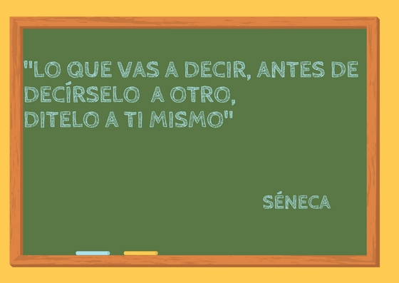

5. MEMORIA
¡ENSAYA!

Esta fase la vamos a identificar con el necesario ensayo.
Ensaya, ensaya y ensaya esta sí que es una norma en la que todos los autores se ponen de acuerdo. El ensayo permite detectar errores que se hayan producido en las fases anteriores y asegurar el éxito en la siguiente.
Tanto si has optado por escribir el texto palabra por palabra como si tienes un guion debes trabajarlo de tal manera que llegues a conseguir con tus ensayos dos objetivos:
- Controlar y ajustar el tiempo hasta que dure menos del tiempo asignado.
- Apropiarte del mensaje de tal manera que las palabras del texto estén automatizadas para así prestar atención al momento comunicativo, al significado de las palabras, a la transmisión de emociones y no al texto.
Mnemósine, en la mitología griega, es la personificación de la memoria y madre de las musas. Algo tan místico no lo puedes delegar en un powerpoint o unas tarjetas de cartón. La memorización es el trabajo que debes realizar por adelantado antes del momento vivo de la comunicación. Ganarás desenvoltura, seguridad y flexibilidad.
 Mnemosyne (Gabriel Dante Rosetti)
Mnemosyne (Gabriel Dante Rosetti)
No se trata de aprender una cadena de palabras (si olvidas una, el tren se para) sino de poder recrear el texto en tu mente. Lo que se buscamos en esta etapa es el trabajo de:
Las palabras clave
La estructura y
Las transiciones
Estos elementos actuarán como trampolines para que el resto del texto (también ensayado) fluya.
Si lo haces así, tu powerpoint podrá ser fresco y dinámico (no incluyendo en él toda la información que vas a transmitir) y tus tarjetas cumplirán una función de apoyo en momentos muy concretos sin comprometer la conexión con el auditorio. La memoria sin apoyo es un trapecista sin red: no tiene sentido correr el riesgo, aunque da espectacularidad.
Chris Anderson (2016) dice “las mejores charlas memorizadas llegan a saberse tan bien que los conferenciantes pueden concentrarse en su pasión por las ideas que contienen. Las mejores charlas improvisadas se han practicado un número suficiente de veces, hasta el punto de que quienes la pronuncian (...) encuentran que muchas de las frases más potentes ya están en su mente”. Efectivamente, tanto si partes de un guion como de un texto, el proceso de ensayo y memorización llevará al mismo lugar: un texto perfectamente interiorizado.
Muchas personas tienen miedo a que su charla suene a ”ensayada”. Si tu charla suena a “ensayada”, es que has ensayado poco. Hay que practicar hasta que el mensaje fluye de manera natural y libera la mente para poder dedicarla a los aspectos no verbales (conexión, escucha activa, lenguaje no verbal…).
Conviene ensayar solo (grábate en vídeo si es posible y si no lo es mírate en el espejo), pero también ante una audiencia de confianza (mejor si comparte rasgos con los futuros asistentes) a la que poder interrogar sobre la estructura, los contenidos, los ejemplos, los aspectos no verbales y la emoción transmitida.
Dejamos aquí un vídeo en el que te invitamos a que admires el poder que da la memorización del discurso. Se trata de Mar Romera, durante la conferencia que dura 1 hora desarrolla los contenidos perfectamente memorizados estableciendo constantemente conexiones con el auditorio y transmitiendo ríos de emoción.
(No es necesario que lo veas entero para apreciar el trabajo de la memoria)